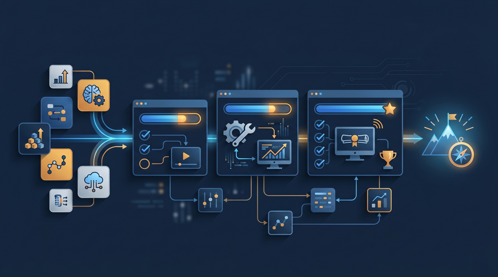
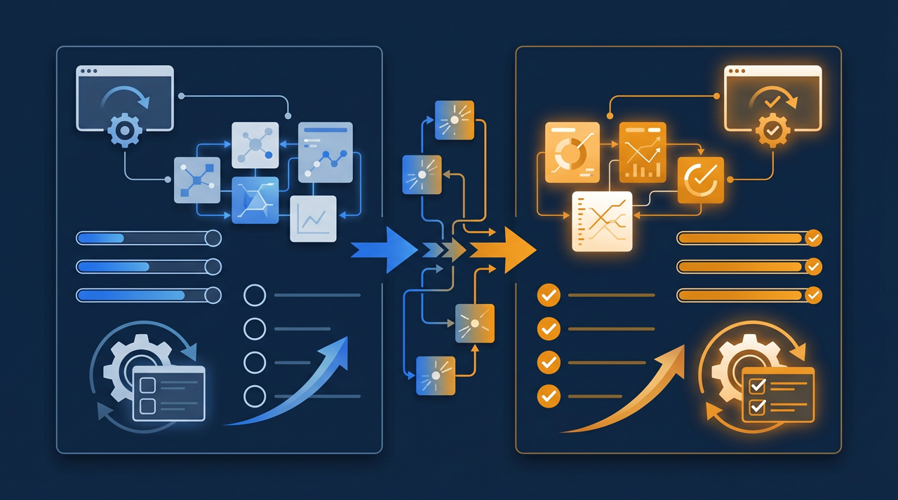
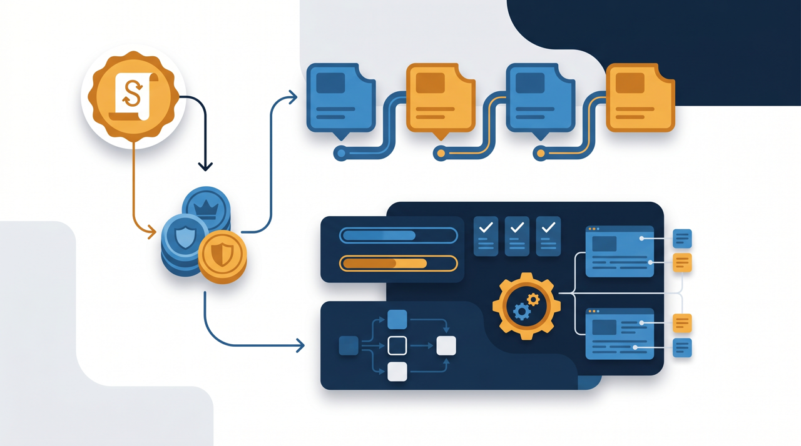

「研修動画を配るだけなら、UdemyやTeachableのようなサービスでもいいのでは？」——そう考える方は少なくありません。確かに、講座を作って届ける手段としては共通する部分もあります。けれど、社内の研修や自社の講座事業を考えると、講座販売プラットフォームと、自社専用の研修環境（LMS）では、向いている用途が違ってきます。この記事では、両者の仕組みの違いを事実ベースで整理し、自社専用の環境を持つことにどんなメリットがあるのかを見ていきます。

まず、出発点の違いを整理する
TeachableやUdemyといったサービスと、自社専用の研修環境を比べるとき、機能を一つずつ並べる前に、それぞれが「何のために作られているか」を押さえておくと、違いがすっきり見えてきます。どちらが優れているという話ではなく、目的が違う道具なんですね。
Udemyは、世界中の講師が作った講座が並ぶ、いわばマーケットプレイス型のサービスです。利用者は、その中から学びたい講座を選んで購入します。集客はプラットフォーム側が担い、講師は自分の講座を出品する、という構図です。Teachableは、講師が自分の講座サイトを作って販売できるタイプで、Udemyほど市場性は強くないものの、講座を「商品として外に売る」ことを軸にしている点は共通しています。
一方、自社専用の研修環境、つまりLMS（学習管理システム）は、社内の研修やeラーニングを自社のために配信・管理することを主な目的としています。誰に何を見せるか、どこまで学んだかを自社でコントロールし、教材を社内の資産として蓄積していく。外に売ることではなく、自社のために運用することが出発点なんです。
この違いを一言でまとめると、講座販売プラットフォームは「外に向けて売る」道具、自社専用の研修環境は「自社のために運用する」道具、と整理できます。同じ「動画で学ぶ」でも、向いている使い方が異なるわけです。では、具体的にどこが違うのか、論点ごとに見ていきましょう。
違い1：ブランドと「見え方」
最初の論点は、受講者から見たときの「見え方」です。研修や講座を、どのブランドの体験として届けるか、という部分ですね。
マーケットプレイス型のサービスで講座を出すと、受講者はそのプラットフォームのサイト上で学びます。画面のデザインも、並んでいる他社の講座も、おおむねプラットフォームの世界観の中にあります。自社の講座は、その中の一つとして表示される、という形です。手軽に始められる反面、自社のブランドを前面に出しにくい、という面があります。

これに対して、自社専用の研修環境では、自社のロゴや色、メッセージで画面を整えられることが多くあります。受講者は「○○社の研修を受けている」という体験をそのまま受け取れます。社内研修であれば、自社の文化や言葉で教材を届けられますし、顧客向けの講座であれば、自社のブランド体験として一貫させられる、というわけです。
ある専門サービスの会社では、当初は手軽さからマーケットプレイス型で顧客向け講座を販売していました。けれど、自社のブランドを大切にしたい思いから、自社専用の環境に切り替えたそうです。受講者から「御社の世界観で学べて安心した」という声が増えた、といいます。何を学ぶかだけでなく、どのブランドの体験として学ぶか。これが意外と受講者の印象を左右するんですよね。
違い2：受講管理と進捗の把握
2つ目の論点は、受講者や進捗をどこまで自社で管理できるか、です。研修を仕組みとして回すうえで、ここは大きな分かれ目になります。
社内研修で大切なのは、「誰が、どこまで、いつ学んだか」を把握できることです。新人研修であれば、全員が必須の教材を見終えたかを確認したいですし、つまずいている人がいれば早めにフォローしたい。こうした管理は、自社専用の研修環境が得意とする部分です。受講者を自社で登録し、進捗を一覧で確認し、未受講者にリマインドする、といった運用がしやすい設計になっていることが多くあります。
- 受講者を自社で登録・管理できるか
- 誰がどこまで進んだかを一覧で把握できるか
- 部門や拠点ごとに分けて配信・管理できるか
- 確認テストや修了の合否を記録できるか
- 受講記録や修了状況をデータとして出力できるか
マーケットプレイス型のサービスは、不特定多数に講座を売ることを想定しているため、社内の特定メンバーをきめ細かく管理する用途には、必ずしも向いていません。誰が受けたかをある程度は把握できても、社内の研修運用として求められる粒度には届かないことがあります。厚生労働省の能力開発基本調査でも、企業の教育訓練は計画的な実施が重視されていますが、計画的に回すには、誰がどこまで進んだかを自社で握れることが前提になります。
ある小売業の会社では、汎用的なスキル学習にはマーケットプレイス型を併用しつつ、自社独自の接客手順や商品知識は自社専用の環境で配信し、受講状況を管理しているそうです。学ぶ内容によって器を使い分ける。これも一つの現実的な進め方ですね。
もう少し具体的に考えてみましょう。たとえば、新人が入社したときに見てほしい教材が10本あったとします。社内研修なら、その10本を全員が見終えたかを一覧で確認し、見ていない人には「あと3本残っています」と声をかけたいところです。この「対象者にもれなく見てもらい、進み具合を追う」という運用は、対象を自社で握れて初めて成り立ちます。マーケットプレイス型は、そもそも一人ひとりが好きな講座を自由に選ぶことを前提にしているので、こうした「決められた教材を全員に」という使い方とは設計の思想が異なるんです。社内研修で進捗管理を重視するほど、自社専用の環境の利点が際立ってくる、というわけですね。
違い3：教材の所有とノウハウの蓄積
3つ目は、教材とノウハウが誰の手元に残るか、という論点です。研修を続けていくと、教材そのものが会社の財産になっていきます。
自社専用の研修環境では、作った教材を自社の資産として蓄積していけます。動画・マニュアル・確認テストが社内に積み上がり、人が入れ替わっても教育の土台として残ります。J-Net21などでも、中小企業にとって人材育成のノウハウをいかに組織に残すかは重要なテーマとして取り上げられていますが、教材を自社の環境に集約しておくことは、その一つの答えになります。
加えて、自社独自のノウハウを社内限定で扱える点も見逃せません。自社の手順や顧客対応のコツといった、社外に出したくない情報を、外部に公開せず社内だけで配信できます。情報処理推進機構（IPA）も中小企業向けに情報セキュリティの指針を示していますが、誰がアクセスできるかを自社でコントロールできることは、業務ノウハウを扱ううえで安心材料になります。
ところで、マーケットプレイス型で講座を提供する場合、利用規約や手数料、データの扱いはプラットフォーム側のルールに従うことになります。これは外部の集客力を借りる対価でもあり、一概に悪いわけではありません。ただ、自社のノウハウを自社の管理下に置きたいなら、自社専用の環境のほうが向いている、という整理になります。器を借りるか、自社で持つか。目的次第で答えが変わるわけです。
教材の蓄積という点で、もう一つ触れておきたいことがあります。研修を続けていくと、最初に作った教材を少しずつ直し、新しい教材を足し、確認テストを充実させていく、という改善の積み重ねが起きます。この積み重ねが自社の環境にまとまっていれば、教育のノウハウそのものが組織の中に育っていきます。逆に、外部のプラットフォーム上に教材が点在していると、サービスの仕様変更や提供終了といった事情に左右されることもあり、長期で見ると不安が残ります。教材を「借りた場所に置く」のか「自分の家に置く」のか。長く運用するほど、この差は効いてくるんですよね。
違い4：助成金や証憑への対応
4つ目は、助成金を活用する場合の対応です。研修費用を抑える手段として、ここは実務上とても大切な論点になります。
研修にかかる費用は、人材開発支援助成金のように、訓練の経費や賃金の一部を国が支援する制度を活用できる場合があります。こうした制度を使う際には、研修を実際に実施したことを示す受講記録や、修了の証明といった書類の整理が求められることがあります。
| 観点 | マーケットプレイス型 | 自社専用の研修環境 |
|---|---|---|
| 主な目的 | 講座を外部に販売する | 自社の研修を運用・管理する |
| ブランドの見せ方 | プラットフォームの世界観の中 | 自社のブランドで一貫できる傾向 |
| 受講・進捗の管理 | 細かな社内管理には不向きなことが | 自社できめ細かく管理しやすい |
| 教材・ノウハウ | プラットフォームのルールに依存 | 自社の資産として蓄積しやすい |
| 助成金の証憑対応 | データ出力に制約があることも | 受講記録を出力・保管しやすい傾向 |
表のとおり、受講ログや修了状況を自社でデータとして出力・保管できる自社専用の環境のほうが、助成金の手続きを進めやすい傾向があります。導入費用の一部を助成金でまかなえる可能性も含めて考えると、研修を仕組み化する際の投資判断がしやすくなりますよね。汎用スキルの学習にマーケットプレイスを使う場合でも、助成金を前提とする研修は自社環境で記録を残す、といった役割分担が現実的なこともあります。
目的別に整理する：どちらを選ぶか
ここまでの違いを踏まえて、目的別にどちらが向いているかを整理しておきます。大切なのは、優劣ではなく用途のマッチングです。

まず、汎用的なスキルを手軽に学びたい、講師を探す手間を省きたい、という場合は、豊富な講座がそろうマーケットプレイス型が役立つことがあります。ここは外部の蓄積を活かせる場面です。
一方、自社独自のノウハウを社内限定で配信したい、誰がどこまで学んだかを管理したい、教材を会社の資産として残したい、助成金を活用したい——こうした目的が一つでも当てはまるなら、自社専用の研修環境のほうが向いている傾向があります。社内研修や、自社の顧客・会員・取引先に向けた講座事業は、まさにこちらの領域です。
ある士業事務所では、一般向けの汎用講座はマーケットプレイスで販売しつつ、顧問先向けの専門講座は自社専用の環境で、ブランドと受講管理を保ちながら提供しているそうです。両方を敵対させるのではなく、それぞれの強みが活きる場面で使い分ける。これが、もっとも無理のない考え方なのかもしれません。
まとめ：自社の目的に合った「器」を選ぶ
TeachableやUdemyのような講座販売プラットフォームと、自社専用の研修環境（LMS）の違いは、機能の優劣ではなく、出発点と目的の違いにあります。前者は外に向けて講座を売ることに強く、後者は自社のために研修を運用・管理することに強い。同じ「動画で学ぶ」でも、向いている用途が異なるわけです。
自社専用の環境を持つメリットは、自社のブランドで研修を見せられること、受講者や進捗を自社で管理できること、教材とノウハウを会社の資産として蓄積できること、そして助成金の手続きに必要な記録を自社で残しやすいこと、に整理できます。社内研修や、対象を絞った自社の講座事業を考えるなら、こうした利点は大きく効いてきます。
汎用スキルの学習にはマーケットプレイスを、自社のノウハウや管理が必要な研修には自社専用の環境を。目的に応じて器を使い分けることで、それぞれの強みを引き出せます。費用面では人材開発支援助成金などの活用も視野に入れながら、自社の目的に合った研修環境を選んでみてください。
よくある質問
TeachableやUdemyは、講座を作って広く販売するためのプラットフォームという性格が強いサービスです。一方、自社専用の研修環境（LMS）は、社内の研修やeラーニングを自社のために配信・管理することを主な目的としています。前者は「外に向けて売る」、後者は「自社のために運用する」という出発点の違いがあると考えると整理しやすくなります。
いけないわけではありません。汎用的なスキルを学ぶには、豊富な講座がそろうマーケットプレイスが役立つこともあります。ただし、自社独自の手順やノウハウを社内限定で配信し、受講状況を管理したい場合は、自社専用の環境のほうが向いている傾向があります。目的に応じた使い分けが現実的です。
自社のブランドで研修を見せられること、受講者や進捗を自社で管理できること、教材を社内の資産として蓄積できること、などが挙げられます。誰がどこまで学んだかを記録でき、外部に公開せず社内限定で運用できる点も、業務ノウハウを扱ううえでの利点になります。
不特定多数の一般消費者に広く講座を売りたい場合は、集客力のあるマーケットプレイス型が選択肢になります。一方、自社の顧客や会員、取引先など、対象を絞って自社のブランドで販売したい場合は、決済と連動できる自社専用の環境のほうが向いていることが多くあります。
人材開発支援助成金などを活用する場合、受講記録や修了の証明といった書類の整理が求められることがあります。受講ログや修了状況を自社でデータとして出力・保管できる自社専用の環境のほうが、こうした手続きを進めやすい傾向があります。
多くの場合、手元に動画ファイルが残っていれば、自社専用の環境にあらためて登録して配信することができます。ただし、プラットフォームによっては受講履歴やテスト結果を持ち出せないこともあるため、移行を検討する際は、何を引き継げるかを事前に確認しておくことをおすすめします。